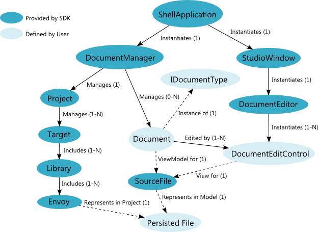

The Document System
The Diagram SDK document system is responsible for managing, displaying and editing the user's source files within a shell application.
Document System Architecture
The following diagram illustrates the high-level architecture of the document system.

Document System Theory of Operation
When the end user opens a shell application, the ShellApplication instantiates a DocumentManager, which is responsible for managing the life cycle of all Documents opened within the application. The ShellApplication's StudioWindow instantiates a DocumentEditor, which is responsible for managing the DocumentEditControls]DocumentEditControlRef that edit Documents.
When the user opens an XML source file from disk, the persistence system parses the file to create a SourceFile, which represents the underlying XML source file in memory. The DocumentEditor instantiates the default DocumentEditControl specified by the Document's DocumentType. The DocumentEditControl provides a view that the end user can interact with to edit the document.
Primary Classes that Participate in the Document System
SourceFile
A SourceFile represents a persisted file as a hierarchy of Diagram Object Model Elements in memory. A Document serves as a ViewModel for a SourceFile.
IDocumentType
The IDocumentType interface must be implemented by all DocumentType plug-ins. To be recognized by a shell application, you must export your DocumentTypes through the plug-in system by declaring them as implementers of the IDocumentType contract. DocumentTypes are primarily responsible for creating new Documents and opening existing SourceFiles as Documents.
Document
A Document is a ViewModel for a SourceFile. The purpose of a Document is to provide editor features for a SourceFile. Documents are created by their corresponding ocumentType factory classes and are used to track what is currently being edited. Documents have two major purposes:
- Providing commands and handlers for a SourceFile
- Connecting a SourceFile's Elements to DocumentEditControls in the View layer
DocumentManager
The DocumentManager maintains a list of currently open Documents and provides mechanisms to bind a SourceFile to a Document. It owns the lifetimes of Documents. The DocumentManager is a singleton for an application instance. The DocumentManager also owns the reference to the current project. There is always one and only one project open at a time for a given shell application instance. There is also a requirement that everything opened is part of the current project. The DocumentManager implements the IDocumentManager interface, which is importable through the plug-in framework.
DocumentType
The DocumentType class is a factory used to create Documents bound to SourceFiles.
DocumentEditor
DocumentEditor is the root control in the shell responsible for document editing. The DocumentEditor is an internal object whose role is to:
- Instantiate DocumentEditControls for open documents and provide the user with the means of switching between available DocumentEditControls
- Provide helpers for DocumentEditControls to navigate document hierarchies
- Provide zoom and auto-zoom behavior
A document editor comprises a hierarchy of .NET FrameworkElements. At the root of the hierarchy is the DocumentEditControl, which includes a ResourceDictionary and a DesignerEditControl. The resource dictionary contains DataTemplates that can be data bound to model elements. The DesignerEditControl contains a RootDiagramCanvas, which is responsible for binding the model elements to the data templates.
DocumentEditSite
The DocumentEditSite type provides services to user interface elements of a DocumentEditControl, including:
- Access to the application instance and the CompositionContainer
- Methods to edit related documents
- Methods to change the active editor for a document
You can call DocumentEditSite.GetEditSite to access the DocumentEditSite for a specific dependency object.
DocumentEditControl
The DocumentEditControl type provides the root visual element for editing a Document. Thus, a DocumentEditControl is a View for a SourceFile. DocumentEditControls are hosted in the StudioWindowStudioWindowRef Documents tab. Each IDocumentType can support one or more DocumentEditControls. For example, a VI supports both a front panel DocumentEditControl and a block diagram DocumentEditControl.
The DocumentEditControl includes a ResourceDictionary and a DesignerEditControl. The ResourceDictionary contains DataTemplates that can be data bound to model Elements.
DocumentEditControl is the first plug-in point in the visual tree, and serves as a View of a SourceFile. A DocumentEditControl can control everything it shows the user. However, a DocumentEditControl for a diagram-based Document typically uses a nested DesignerEditControl to take advantage of the Diagram SDK's built-in diagram editing system. In this case, the DocumentEditControl would:
- Include a nested DesignerEditControl in its XAML definition.
- Include a nested RootDiagram within its DesignerEditControl.
- Override the Designer property in the code-behind to return the nested DesignerEditControl.
- Override the CreateDefaultTool method to return a default AutoTool with a set of custom sub-tools. See Tool Management for more details.
- Override the CreateRibbonBars method to return top-level Ribbon tab content to display when the DocumentEditControl is active.